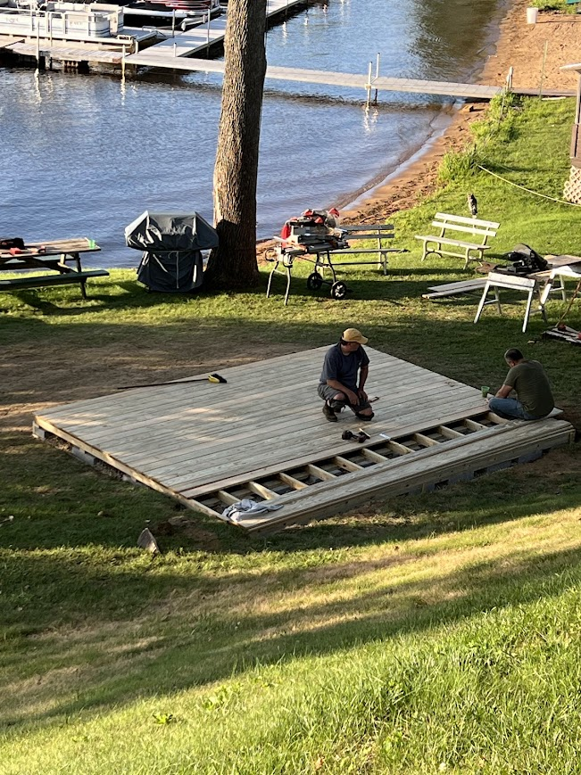
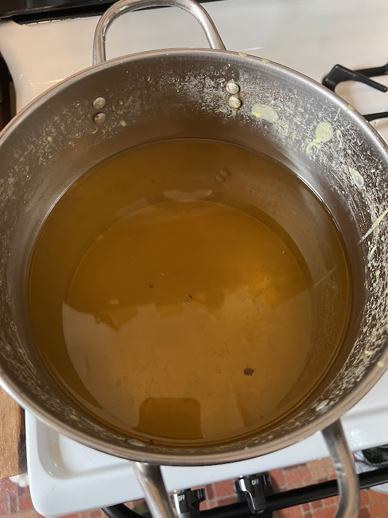
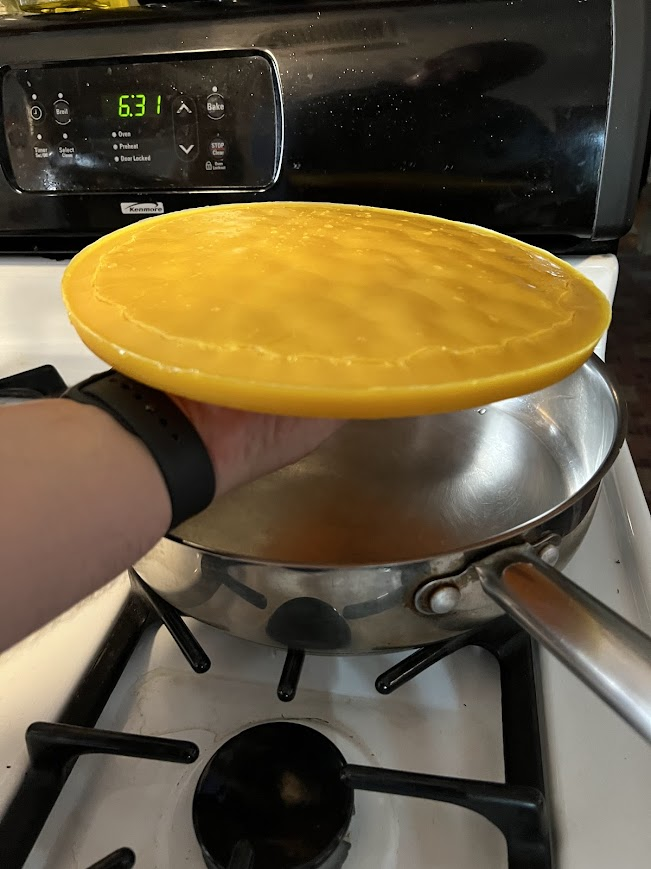
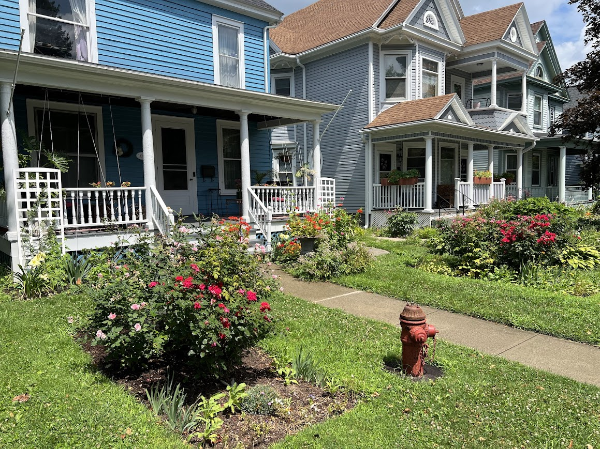
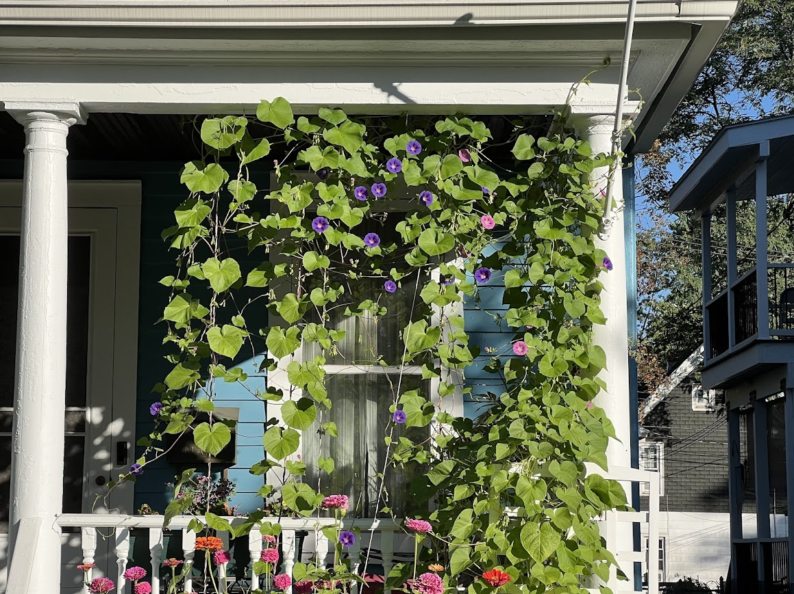
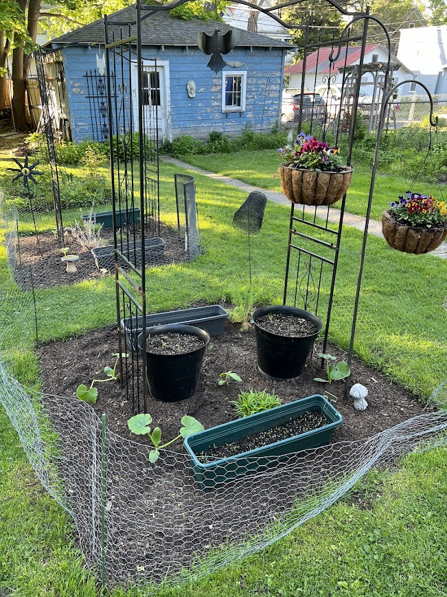
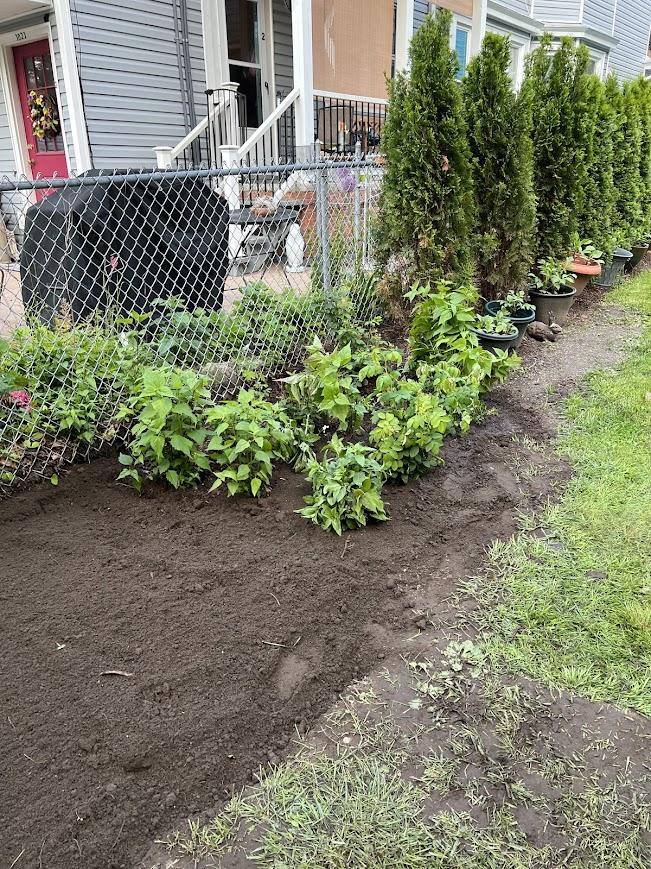
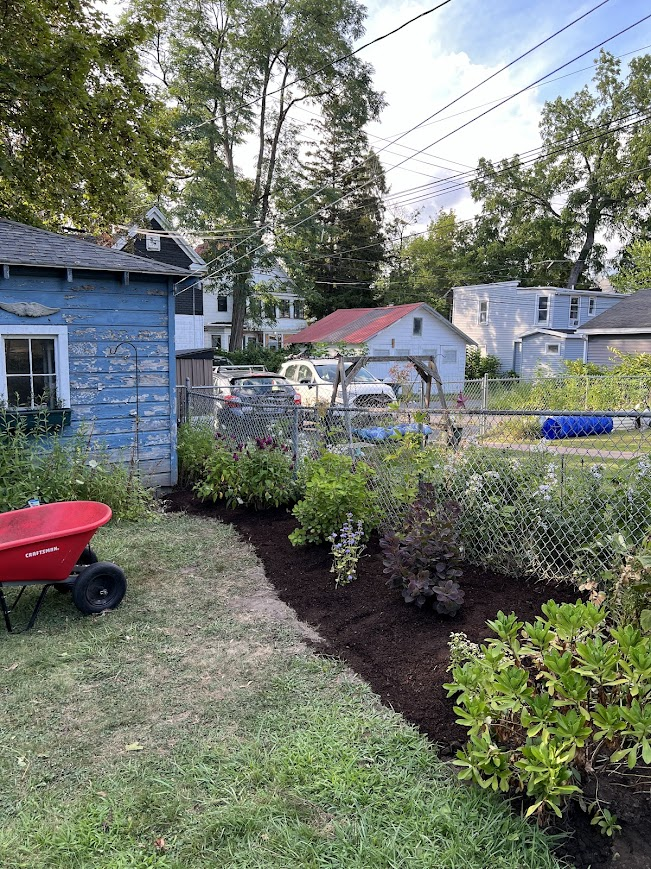

Building a Deck with Family
Posted on August 10, 2025
Earlier this month, I had a great time helping my grandfather and uncles build a new platform deck at my grandfather's house. It was a lot of hard work, but really rewarding! I pitched in by helping spread rocks for the foundation, laying out all the boards, and nailing them down.
It's amazing what we got done in just one day! A few days later, it was all finished. They added a couple of picnic tables and planted some lovely boxwood shrubs in front. It looks fantastic and was so much fun to build together.


First Time Processing Beeswax
Posted on August 3, 2025
My husband and I keep bees, and even though neither of us actually like honey, we really enjoy the hobby and appreciate everything the bees do for our gardens! Besides all the honey, we end up with a lot of honey-filled wax cappings from the harvest. We have a bunch of them around the house, so I attempted collecting and cleaning the wax for the first time.
I gathered all the cappings I could find and boiled them in a pot of water, all wrapped up inside a large cheesecloth. As it boils, the pure wax melts and leaves through the pores of the cloth. All the "slumgum"—which is the term for the leftover bits of honey, propolis, and old bee cocoons—stays trapped inside the cheesecloth.
After boiling, I just let the pot cool down. The clean wax floats to the top and hardens into a solid brick. Here’s a look at the melted wax floating in the pot, and the final, beautiful block of twice-cleaned solid wax!


My 2025 Gardening Adventures!
Posted on July 15, 2025
This year has been a fantastic journey for my gardens! I maintain several different spaces around my home, each with its own charm and purpose.
Front Porch Delights
On and in front of my front porch, I've cultivated a vibrant display. This year, I focused on growing beautiful morning glories, training them up strings to create a lush, living curtain that covers the whole porch. It's truly magical to sit out there in the mornings!


Bountiful Vegetable Patch
My vegetable garden has also been thriving! I've had great success with several plants. There's nothing quite like harvesting your own fresh produce for dinner. My main crops were:
- Vegetables
- Zucchini
- Cucumbers
- Tomatoes
- Peas

Reclaiming the Property Line Garden
One of my most significant projects this year was tackling the old garden along the property line. It was quite overgrown, but I put in considerable effort to clear it out. I meticulously dug up all the weeds and unwanted plants, and then spent hours sifting through the dirt to remove stubborn roots. It was hard work, but so rewarding!

After all that clearing, I carefully replanted the plants I wanted to save, including my beloved wild roses, which always smell absolutely amazing. To give the new additions the best start, I laid down a thick layer of mulch to provide natural fertilizer and keep weeds at bay. I then introduced a couple of gorgeous smoke bushes and vibrant butterfly bushes, which I adore. I'm excited to see them mature and attract even more pollinators!

A Night at the Theatre: Pirates! The Penzance Musical
Posted on June 21, 2025
What an incredible night! On the 20th, my husband and I went to see "Pirates! The Penzance Musical" at the Roundabout Theatre, and it was absolutely hilarious and so well done.
The show was fantastic, but the night got even better! We waited outside the venue afterwards and got to meet Jynkx Monsoon and David Hyde Pierce! They were both so kind, and we managed to get selfies with them. Such an amazing and memorable experience!
Our Wedding Day
Posted on January 11, 2025
I'm so excited to share that my husband Tom and I got married on January 10th of this year! We had a beautiful ceremony at the Schenectady Town Hall. It was a small and intimate affair, with our friend Becca officiating and my parents as our witnesses. It was the perfect day.